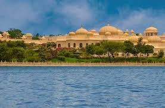

📅 20 August 2025 | By Rajdhani Events Team

As wedding planners at Rajdhani Events with over 50 years of experience, we've organized countless destination weddings across India. Yet Udaipur continues to be our clients' top choice in 2025, and here's why.
Udaipur offers authentic royal venues that money can't buy elsewhere. From the City Palace Complex to Jagmandir Island Palace, couples can literally get married in centuries-old royal residences. The Oberoi Udaivilas and Taj Lake Palace continue to set global standards for luxury wedding hospitality.
Lake Pichola at sunset, the intricate architecture of City Palace, and the romantic ambiance of Saheliyon ki Bari provide endless photography opportunities. Our photography teams consistently deliver stunning portfolios when working in Udaipur.
Unlike many destinations, Udaipur has mature wedding infrastructure. From experienced decorators to reliable caterers, the city has professionals who understand destination wedding logistics.
Your guests will thank you for choosing Udaipur. The city offers cultural experiences, boat rides, and sightseeing that turn your wedding into a memorable vacation for everyone.
We've handled 50+ destination weddings in Udaipur and understand the unique challenges - from vendor coordination to guest logistics. Our team ensures your royal wedding dreams become reality without the stress.
Ready to plan your Udaipur wedding? Contact Rajdhani Events for a consultation. With our local connections and decades of experience, we'll make your destination wedding seamless and spectacular.
Rajdhani Events